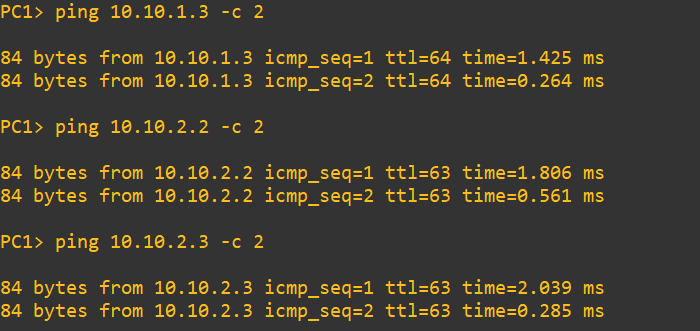
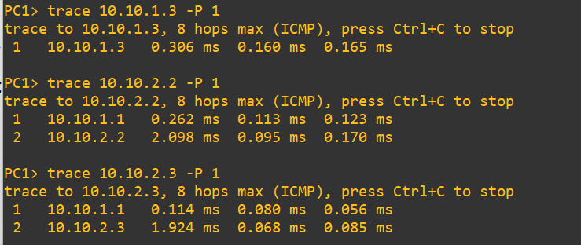

Lab #14
Open vSwitch as Layer-3 router
The purpose of this lab is to show how how it is possible to use Open vSwitch (OVS) as a Layer-3 switch to route packets across VLANs.
Differently from what was shown in Lab #11, we will achieve this result not using an external router.
Introduction
To achieve our goal, we need to modify the configuration of the default Open vSwitch appliance we added to GNS3 in Lab #13.
The OVS appliance is configured so that the container has 16 NICs (eth0, eth1, ..., eth15).
Interface eth0 is left for management purposes.
All the other interfaces are connected as ports to OVS instance br0.
Other three switches are created (br1, br2 and br3) but are unused.
For our purposes, we need to create as many OVS instances as the number of VLANs we want to manage: two in our experiment.
Then we need to attach each of the NICs to the corresponding VLAN OVS instance.
Finally, we need to assign an IP address to each VLAN OVS instance. These IP addresses will be used as default gateway addresses by VLAN hosts.
Routing between directly attached VLANs will be automatically performed by the OVS instance, provided that IPv4 forwarding has been enabled (see Lab #2).
The following picture shows the internal configuration we need to reproduce in the OVS instance after that it has been connected and started.
Experiment steps
- Create the following topology in GNS3. Choose the "GNS3 VM" server to instantiate all the devices of this lab.

- Start all devices.
- Open PC1 terminal and execute the commands:
ip 10.10.1.2/24 10.10.1.1
save
- Open PC2 terminal and execute the commands:
ip 10.10.1.3/24 10.10.1.1
save
- Open PC3 terminal and execute the commands:
ip 10.10.2.2/24 10.10.2.1
save
- Open PC4 terminal and execute the commands:
ip 10.10.2.3/24 10.10.2.1
save
- Open the Auxiliary Console of switch OVS-1 and execute the following commands:
ovs-vsctl del-br br0
ovs-vsctl add-br br0
ovs-vsctl add-br vlan1 br0 1
ovs-vsctl add-br vlan2 br0 2
ovs-vsctl add-port vlan1 eth1 tag=1
ovs-vsctl add-port vlan1 eth2 tag=1
ovs-vsctl add-port vlan2 eth8 tag=2
ovs-vsctl add-port vlan2 eth9 tag=2
ifconfig vlan1 10.10.1.1 netmask 255.255.255.0
ifconfig vlan2 10.10.2.1 netmask 255.255.255.0
Traffic generation
In PC1 terminal execute the following commands:
ping 10.10.1.3 -c 2
ping 10.10.2.2 -c 2
ping 10.10.2.3 -c 2
and verify that answers are received from all the devices.

In PC1 terminal execute the following commands:
trace 10.10.1.3 -P 1
trace 10.10.2.2 -P 1
trace 10.10.2.3 -P 1
and verify that packets to PC2 are directly forwarded from PC1, while packets to PC3 and PC4 are forwarded through the default gateway implemented by OVS in the switch.

Return to list of labs
Copyright (c) 2024 - Roberto Canonico
Last updated: October 4, 2024 by Roberto Canonico